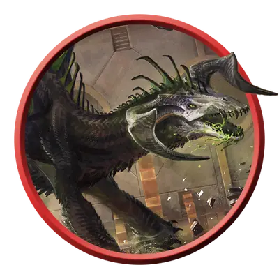

Взрослый чёрный дракон
Adult Black Dragon
Огромный Дракон (Цветной), Хаотичный Злой

Класс Защиты 19 Инициатива +12 (22)
Хиты 195 (17к12 + 85)
Скорость 40 футов, Плавания 40 футов, Полёта 80 футов
| мод | спас | ||
|---|---|---|---|
| СИЛ | 23 | +6 | +6 |
| ЛОВ | 14 | +2 | +7 |
| ТЕЛ | 21 | +5 | +5 |
| мод | спас | ||
|---|---|---|---|
| ИНТ | 14 | +2 | +2 |
| МДР | 13 | +1 | +6 |
| ХАР | 19 | +4 | +4 |
Иммунитеты Кислота
Чувства Тёмное зрение 120 футов, пассивное Восприятие 21, Слепое зрение 60 футов
Языки Общий, Драконий
Опасность 14 (11 500 опыта или 13 000 опыта в Логове; БВ +5)
Особенности
Амфибия. Взрослый чёрный дракон может дышать как воздухом, так и под водой.
Легендарное сопротивление (3/день, или 4/день в Логове). Если дракон проваливает спасбросок, он вместо этого может преуспеть в нём.
Действия
Мультиатака. Дракон совершает три атаки Раздиранием. Он может заменить одну из этих атак использованием Сотворения заклинаний (Кислотная стрела Мельфа (версия 3-го уровня)).
Раздирание. Бросок рукопашной атаки: +11, досягаемость 10 фт. Попадание: 13 (2к6 + 6) Рубящего урона плюс 4 (1к8) урона Кислотой.
Кислотное дыхание (Перезарядка 5–6). Спасбросок Ловкости: Сл 18, каждое существо в Линии длиной 60 футов и шириной 5 футов. Провал: 54 (12к8) урона Кислотой. Успех: Только половина урона.
Сотворение заклинаний. Взрослый чёрный дракон сотворяет одно из следующих заклинаний, не нуждаясь в Материальных компонентах (заклинательная характеристика — Харизма, Сл спасброска заклинаний 17, +9 к попаданию атак заклинаний):
Неограниченно: Кислотная стрела Мельфа, версия 3-го уровня, Обнаружение магии, Ужас
1/день каждое: Едкий шар, Разговор с мёртвыми
Легендарные действия
У этого существа есть 3 использования Легендарных действий (или 4 использования в его Логове); оно может немедленно после окончания хода другого существа потратить одно использование, чтобы совершить одно из следующих действий. Существо восполняет все потраченные использования в начале каждого своего хода.
Туча насекомых. Спасбросок Ловкости: Сл 17, одно видимое драконом существо в 120 футах. Провал: 22 (4к10) урона Ядом, и цель получает Помеху на спасброски для поддержания Концентрации до конца своего следующего хода. Провал или успех: Дракон не может совершить это действие повторно до начала своего следующего хода.
Пугающее присутствие. Дракон использует Сотворение заклинаний (Ужас). Дракон не может совершить это действие повторно до начала своего следующего хода.
Наскок. Дракон перемещается на расстояние вплоть до половины своей Скорости и совершает одну атаку Раздиранием.
Бонус мастерства +5
Среда обитания Болота
Сокровища Реликварные
Чёрные драконы
Драконы разложения и отчаяния
Чёрные драконы упиваются страданием и разрухой. Пока прочие цветные драконы строят козни ради богатств и власти, эти драконы стремятся низвергнуть всё в их досягаемости и властвовать над тлеющими останками.
Чёрные драконы — ужасающие создания с изогнутыми рогами и сморщенными, иссохшими мордами, напоминающими черепа исчадий. Обычно они обитают в застойных топях, осыпающихся развалинах или местах, отравленных магической либо природной скверной. Их кислотное дыхание оставляет след на их владениях: стирает черты с древних статуй и наносит гноящиеся раны самой природе.
Чёрные драконы собирают в своих сокровищницах потускневшие символы былых надежд и реликвии павших империй. Чем более желанным было сокровище, тем выше ценит его чёрный дракон, — особенно если сам постарался над его утратой для всего мира.
Достигнув зрелости, взрослые чёрные драконы становятся одними из величайших ужасов в захваченных ими землях. Под их тлетворным влиянием гнилые болота и кишащие чудовищами руины делаются ещё мрачнее и расползаются вширь. В услужение к дракону стекаются мрачные сектанты и апокалиптические маньяки, ведя за собой неупокоенные кошмары, что повинуются чёрному дракону и помогают ему сеять разруху средь окрестных оплотов красоты и покоя.
Логова чёрных драконов
Чёрные драконы таятся в мрачных руинах, ядовитых болотах или других объятых тленом местах.
Местность, в которой находится логово взрослого или древнего чёрного дракона, искажается из-за его магии, что создаёт следующие эффекты:
• Едкая дымка. Область в пределах 1 мили от логова окутывает зловонный удушливый туман. Видимость в этой области Слабо заслонена. Путешествующие в этой области существа, кроме дракона и его союзников, затрачивают вдвое больше времени на дорогу.
• Гадкая вода. Водные источники в пределах 1 мили от логова магическим образом загрязнены. Испившее такую воду существо должно преуспеть в спасброске Телосложения Сл 15; при провале оно Отравлено на 1 час
Если дракон умирает или перемещает своё логово в другое место, все эти эффекты мгновенно исчезают.